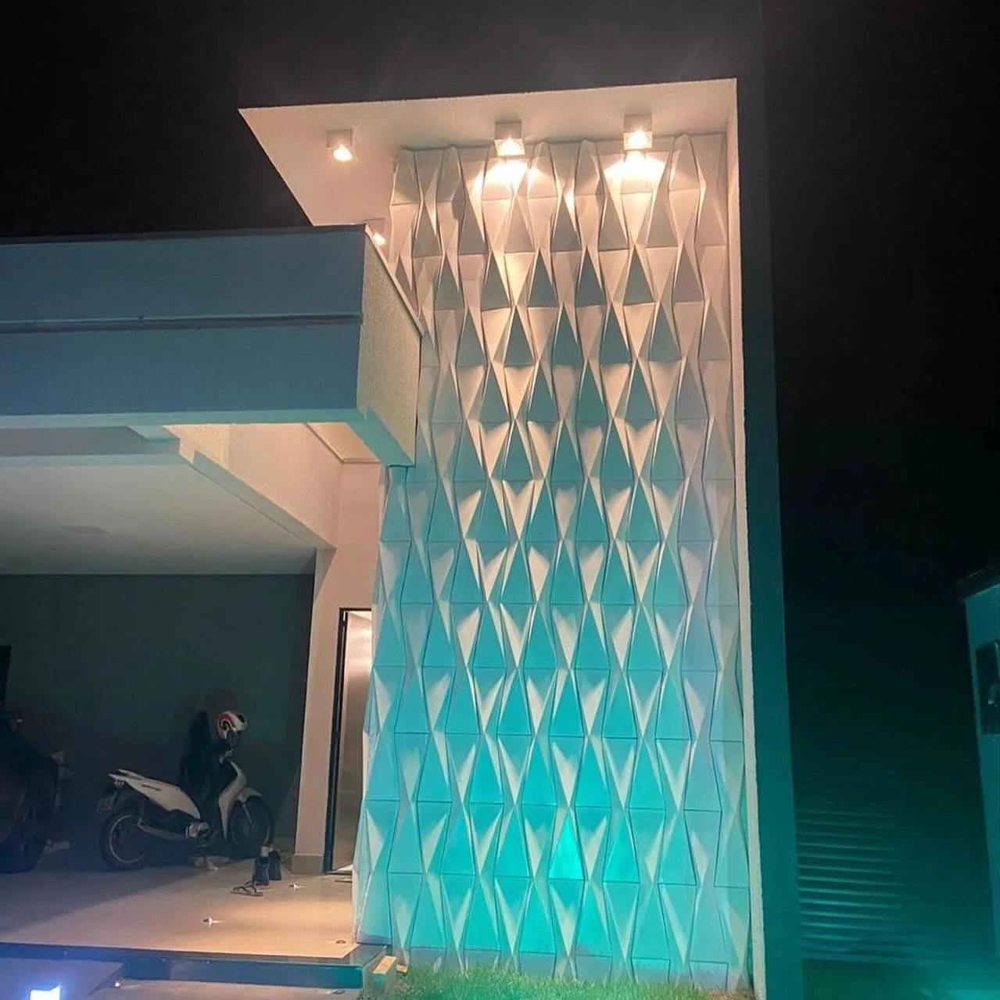
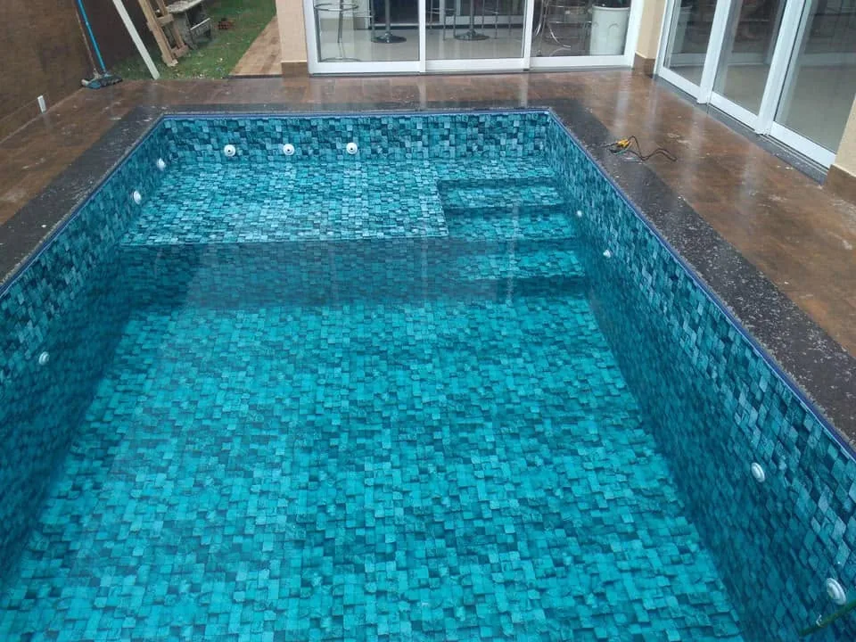

01 · VINIL
Mais liberdade de formato.
Uma opção versátil para projetos personalizados em diferentes medidas e desenhos.
↗Dourados · Mato Grosso do Sul
Piscinas de fibra, vinil e azulejo, além de pisos e revestimentos para áreas externas. Atendimento em Dourados e outras cidades de Mato Grosso do Sul.
PISCINAS
Trabalhamos com piscinas de fibra, vinil e azulejo. Cada opção oferece possibilidades diferentes de formato, acabamento e projeto.
COMPOSIÇÃO INTERATIVA
Veja de forma visual como os principais elementos de uma área de lazer podem compor o mesmo ambiente. A cena abaixo é ilustrativa e usa fotografias reais dos trabalhos da Tatu.
PISOS & REVESTIMENTOS
A Tatu Piscinas também trabalha com pisos e revestimentos para áreas externas, paredes e áreas de lazer.
Aplicações para áreas externas, circulação e espaços próximos à piscina.

Aplicações decorativas para muros, paredes e áreas próximas à piscina.

Diferentes texturas e formatos para compor paredes e ambientes externos.

Revestimentos com formas geométricas que criam efeitos de luz e sombra na parede.

Soluções para integrar piscina, piso, paredes e outros elementos do espaço.

Precisa de piscina e acabamento no mesmo projeto?
Solicitar orçamento ↗PROJETO COMPLETO
Quando piscina, piso e revestimento são escolhidos em conjunto, o resultado fica mais coerente com o espaço.

PORTFÓLIO
Veja fotos reais de piscinas, pisos, revestimentos e alguns bastidores dos serviços da Tatu Piscinas.


Exemplos de piscinas integradas ao espaço externo da residência.


Aplicações decorativas em paredes e superfícies de ambientes externos.
Exemplo de projeto que combina piscina, piso e elementos do entorno no mesmo espaço.
Use os filtros para ver mais fotos por categoria.

SOBRE A TATU
A Tatu Piscinas atende Dourados e outras cidades de Mato Grosso do Sul com piscinas, pisos e revestimentos para áreas de lazer.
Entre as opções de piscina estão fibra, vinil e azulejo. Também realizamos trabalhos com pisos, revestimentos e acabamentos para áreas externas.
COMO FUNCIONA
Fale com a equipe pelo WhatsApp, informe sua cidade e conte o que pretende fazer. A equipe orienta quais informações são necessárias para o orçamento.

Fale com a equipe pelo WhatsApp e conte o que você pretende fazer.

Piscina, piso, revestimento ou uma combinação entre esses serviços.

A equipe orienta quais dados, fotos ou medidas são necessários para preparar o orçamento.

Depois do alinhamento do serviço, a execução segue conforme o que foi combinado.
VÍDEO
Confira um registro real de um serviço executado pela Tatu Piscinas.
Solicitar orçamento ↓SOLICITE UM ORÇAMENTO
Selecione o serviço de interesse, informe sua cidade e prepare a mensagem para falar com a equipe pelo WhatsApp.
DÚVIDAS FREQUENTES
Veja as informações mais comuns. Para valores, disponibilidade e itens inclusos, fale diretamente com a equipe.
Trabalhamos com piscinas de fibra, vinil e azulejo. A melhor opção depende do espaço e do que você pretende fazer.
Sim. A Tatu Piscinas também trabalha com pisos, revestimentos decorativos e acabamentos para áreas de lazer.
O atendimento é realizado em Mato Grosso do Sul. Informe sua cidade pelo WhatsApp para alinhar os detalhes.
Use o configurador acima ou qualquer botão de WhatsApp. Informe sua cidade, o serviço de interesse e, se possível, envie fotos do espaço.
Os itens podem variar conforme o serviço e o projeto. A equipe informa o que está incluído no orçamento antes da execução.